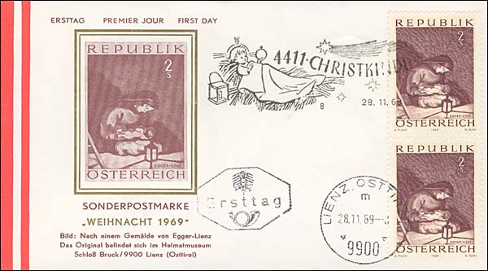
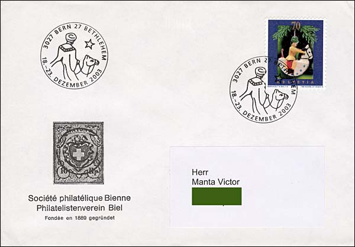
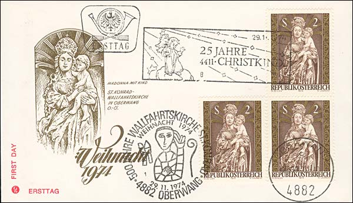
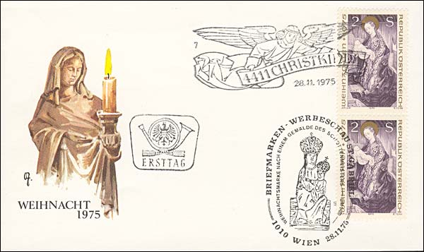
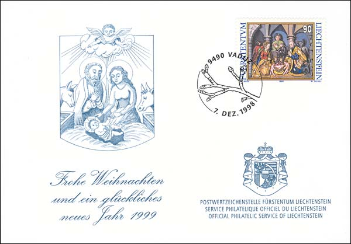
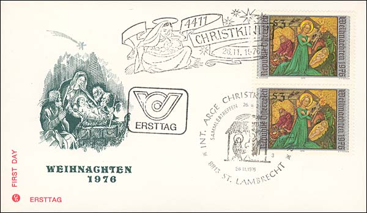

Encouraged by the warm reception of my earlier page on Christmas philatelic beauties, I present below my second one dedicated to the same theme. This time I have compressed a bit more the images, so that I hope that they load faster. I have also changed the background of both pages, the new background featuring the Eglise réformée au Faubourg du Lac, in Biel- Bienne, Switzerland, photographed by me during the winter 2003, at exactly 11:15.
 Austria 28 Nov. 1969, Christmas, FDC. Madonna, after a painting by Albin Egger-Lienz. Cancelled at Christkindl. Scott 857.
 Switzerland, Nov. 2003. Christmas Toys. Cancelled at P.O. Bern Bethlehem, between 18-23 Dec.
 Austria, Nov. 29, 1974. Christmas FDC. Virgin and Child, wood, c. 1600. Cancelled at Christkindl. Scott 1009.
Germany,
Dec. 13, 1986. Christmas. A New Year's present from the German Federal
Ministry of Post and Telecommunications.
 Austria, Nov. 28, 1975. FDC. Virgin and Child from 15th Century Altar. Cancelled at Christkindl. Scott 1028.
 Liechtenstein, Dec. 7, 1998. Christmas. Engraved. A New Year's present from the Official Philatelic Service of Liechtenstein.  Austria, Nov. 26, 1976. FDC. Nativity, by Konrad von Friesach, c. 1450. Cancelled at Christkindl. Scott 1047. Links:
Footnote. The addressee, Sir Harry Annamunthodo was of Indo-Guyanese origin and became an extremely distinguished West Indian surgeon. He was Chairman of the West Indian Medical Journal from 1972 to 1981 and a Professor of Medicine at the University of the West Indies. The Sir Harry Annamunthado lectures and Prize in Surgery are named for him. Biography by P. R. Fletcher, published in West Indian Medical Journal (Mar 1999). Photo: http://www.uwimaa.on.ca/images/anna.jpg. Credits: Blair Stannard, Canada.
|